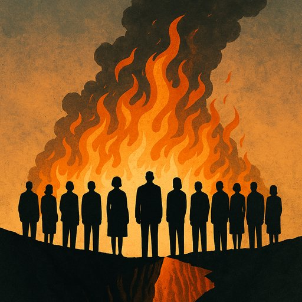

O Luxo de Nada Fazer, e Nada Dizer
Publicado em 2025-07-08 20:22:38

Crónica de uma civilização à beira do abismo
“A culpa não é dos poucos maus que habitam o planeta,
mas sim dos muitos bons que nada fazem para os parar.
Não nos podemos dar ao luxo de ser ‘nin’.
É a civilização humana mais avançada, e em que vivemos, que está em jogo tal como o futuro dos nossos filhos.”
— Francisco Gonçalves
Imagem : Silhuetas caladas diante de um abismo em chamas
Vivemos num tempo em que o mal já não se esconde. Sai à rua, discursa, legisla, administra, comanda. E o bem? O bem assiste. Silencioso. Morno. Elegante na sua hesitação.
O problema já não é o monstro — é o silêncio que o alimenta
O mal de hoje não é só feito de tanques, misérias, fraudes e injustiças. É feito da passividade polida dos que dizem “não me meto”. Dos que consideram que escolher um lado é ser “radical”. Dos que acham que lutar contra a podridão é falta de diplomacia.
Mas a história ensina: quem se cala diante da injustiça, fá-la ecoar.
O espelho do nosso tempo
Enquanto democracias morrem por dentro, enquanto os direitos escorrem como areia entre decretos, enquanto a corrupção se pavoneia nos tribunais como artista de cabaré, há quem ache que o maior dever cívico… é “não se envolver”.
Vivemos numa era em que o “bom senso” virou desculpa para a omissão, e a “neutralidade” é a roupagem moderna da covardia.
E o preço do silêncio? É o futuro
A cada vez que alguém recusa indignar-se, um tirano sorri. A cada vez que alguém diz “não é comigo”, um corrupto assina mais um contrato. A cada vez que alguém desliga a televisão para não se incomodar, o mundo fica mais escuro.
Conclusão: A escolha que resta
Já não há luxo possível em nada fazer. Não há margem para a tibieza, nem refúgio seguro no “meio-termo” ético. Há apenas dois caminhos: agir ou permitir. Erguer-se ou ajoelhar. Ser o que grita… ou o que consente.
E neste instante da civilização, o que cada um faz ou deixa por fazer — é tudo.
Francisco Gonçalves
Cidadão de fogo lúcido no tempo dos cinzentos acomodados